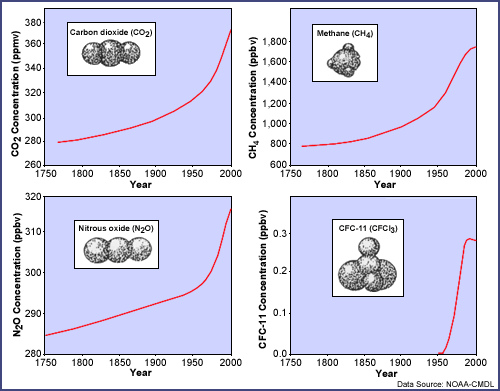
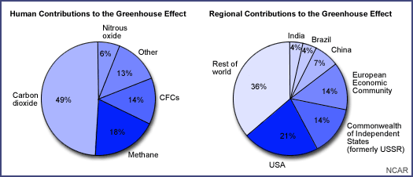

Most scientists believe that human activity is altering the composition of the atmosphere by increasing the concentration of greenhouse gases (GHGs). Greenhouse gases occur naturally in the atmosphere and their presence results in what atmospheric scientists call the greenhouse effect. It is important to remember that the greenhouse effect is what keeps the earth warm enough to be habitable. The current concern is directed at an enhanced greenhouse effect, one that would put more heat-absorbing gases into the atmosphere, thereby increasing global temperatures. The enhanced greenhouse effect has been linked to increased GHG emissions from human activities.
The recent attention given to the greenhouse effect and global warming is based on the recorded increases in concentrations of some of the greenhouse gases due to human activity. Of particular interest are water vapor, carbon dioxide, methane, nitrous oxide, chlorofluorocarbons, and ozone. With the exception of chlorofluorocarbons, all of these gases occur naturally and are also produced by human activity.
-
Water Vapour:Water vapor is the most important GHG on the planet. Unlike most of the other atmospheric gases, water vapor is considered to be a 'variable' gas; that is, the percentage of water vapor in the atmosphere can vary greatly depending on the location and source of the air. For example, over the tropical oceans, water vapor may account for 4% of the total volume of gases, while over deserts or at high altitudes, it may be nearly absent.
-
Carbon dioxide:Carbon dioxide is considered the most important human-influenced GHG. Scientific measurements reveal an unmistakable global increase that is rapid and escalating. This increase arises primarily from the burning of fossil fuels (motorized vehicles, electric power plants, and homes heated with gas or oil) and the burning and clearing of forested land for agricultural purposes.
-
Methane:Methane is largely a product of natural biologic processes, but its output can be accelerated by human activities. is emitted from the decay of organic matter in waterlogged soils (for example, wetlands and rice paddies) and from the digestive tracts of grazing animals (for example, ruminants). The additions from human activities include the expansion of rice agriculture, the increased number of livestock, the increased number of landfills, and leakage from natural gas pipelines.
-
CFCs:Chlorofluorocarbons (CFCs) have no natural source; they are produced entirely by human activity. CFCs have historically been used widely as refrigerants in air conditioners, refrigerators, freezers, and heat pumps. They are found in some foam plastics and used in some electronics manufacturing. Even though CFC production has been vastly reduced, these compounds remain in the atmosphere for a long time; we shall see their effects as GHGs for many years.
-
Nitrous Oxide:Nitrous oxide is a naturally occurring GHG, which has increased significantly in recent years due to human activity. is emitted from coal-burning power plants and can be released from the breakdown of chemical fertilizers in the soil.
 